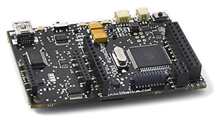

Wireless Sensor Network for Environmental and Energy Applications
Home|
Sensors|
Wireless|
Hardware|
Central Hub
Ultrasonic Anemometer Data:
u|
v|
w
Wind Vane and Cup Anemometer Data:
u|
v
Computers and Microcontrollers
Two Raspberry Pi's were used in this project. One for pre-transmission processing and the other to act as a database and a webserver. One Waspmote Pro microcontroller with an expansion board was used to interface an array of weather sensors.
Raspberry Pi
The Raspberry Pi is a US$35 credit card sized computer. It comes in two different models, Model A (256MB RAM) and Model B (512MB RAM and extra connectivity options). It has a 700MHz ARM processor with a Linux operating system. Programmable GPIO pins are provided which support UART, I2C, PWM and SPI. Two Raspberry Pi's were used. One was used on the remote side, for pre-transmission processing, and another one at the local/central hub side, for logging, data storage, and web-hosting.

Waspmote Pro
The Waspmote Pro is a microcontroller board developed by a company called Libelium who specialise in sensor networks. It has a 15MHz ATMega1281 microcontroller, 128KB of ram and an array of analog input headers, digital input/output pins supporting PWM, UART, I2C and SPI. A specialised slot for Digi Modules, such as XBee and Zigbee is present. Libelium provide a large range of expansion boards to allowing interfacing with a range of different sensors for different applications. It is programmed via a mini-USB. The programming IDE is based of the Arduino IDE.
